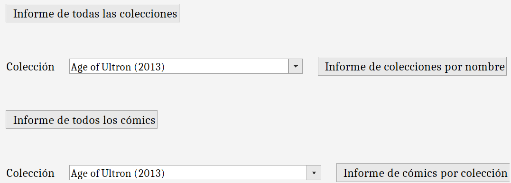

Informes

La última funcionalidad que ofrece el programa es la posibilidad de generar y consultar informes creados a partir de los datos de la base de datos,
algunos de ellos con filtros proporcionados por el usuario. Los informes posibles son los siguientes:
- Informe de todas las colecciones: muestra los datos de todas las colecciones disponibles.
- Informe de colecciones por nombre: muestra los datos de la colección con el nombre insertado.
- Informe de todos los cómics: muestra los datos de todos los cómics disponibles y un gráfico
de número de cómics por año. Crea un informe por cada 1000 cómics
- Informe de cómics por colección: muestra los datos de todos los cómics de la colección seleccionada y un gráfico
de número de cómics por colección.